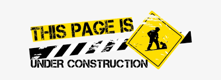

<mat-toolbar class="mat-toolbar">
   <mat-toolbar-row>
     My Work:&nbsp;&nbsp;
       <div style="border: 1px solid whitesmoke ">
         <a routerLink="/home">&nbsp;Site-Home&nbsp;</a>
         <a routerLink="/work">&nbsp;Resume&nbsp;</a>
       </div>
   </mat-toolbar-row>
 </mat-toolbar>
 <div flex layout="row">
   <div layout="column" flex>
     <div class="box1">
       
     </div>
     <div class="box2">
       <mat-card flex="100" layout-margin layout-padding layout-align="center stretch" >
         <mat-card-header>
           <div mat-card-avatar class="example-header-image"></div>
           <mat-card-title>The Site</mat-card-title>
           <mat-card-subtitle>IT Project Work</mat-card-subtitle>
         </mat-card-header>
           
         <mat-card-content>
         </mat-card-content>
       </mat-card>
     </div>
     <div class="box3">
       All rights reserved Brian Quinn
     </div>
   </div>
 </div>